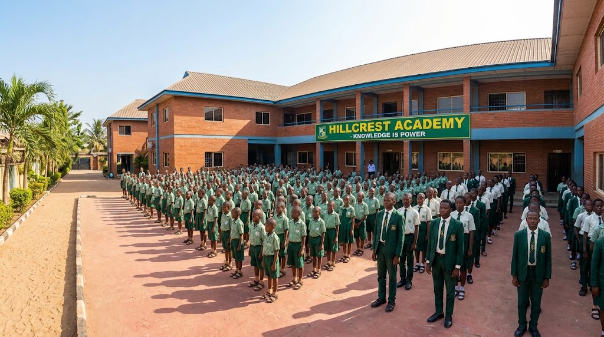
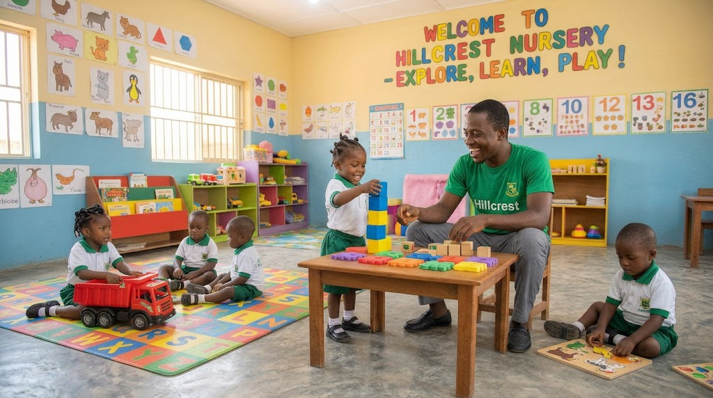
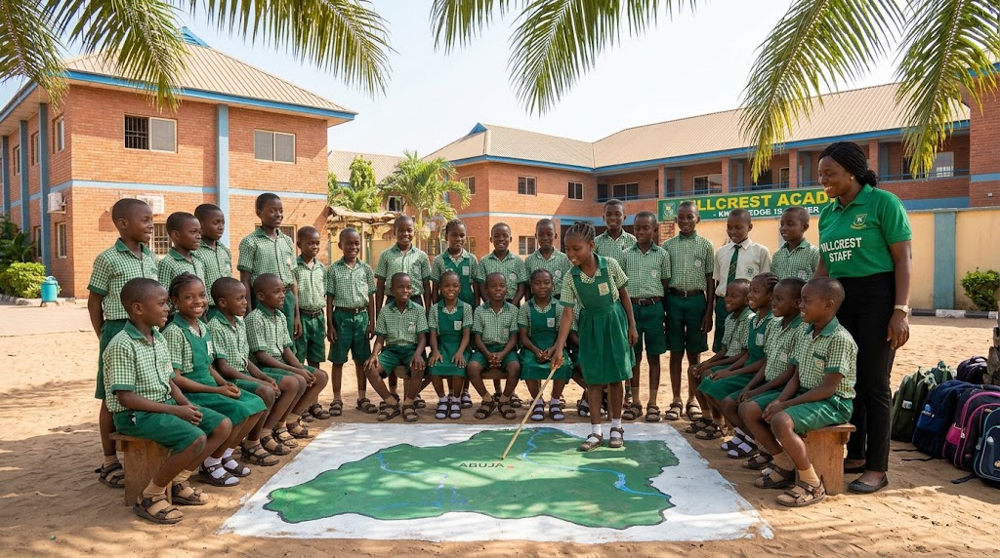
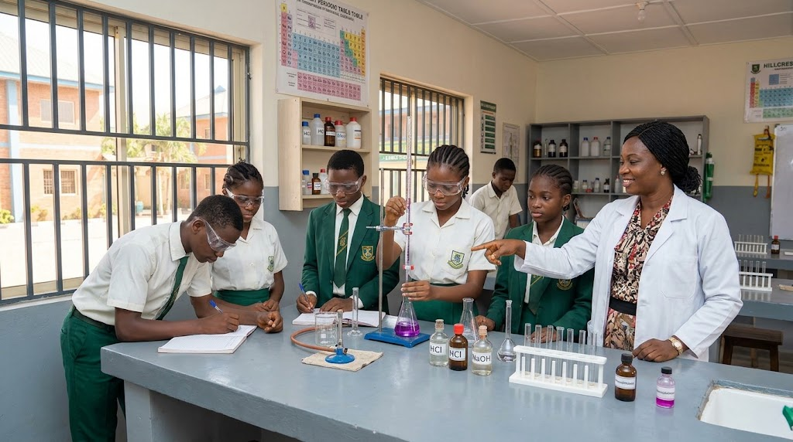
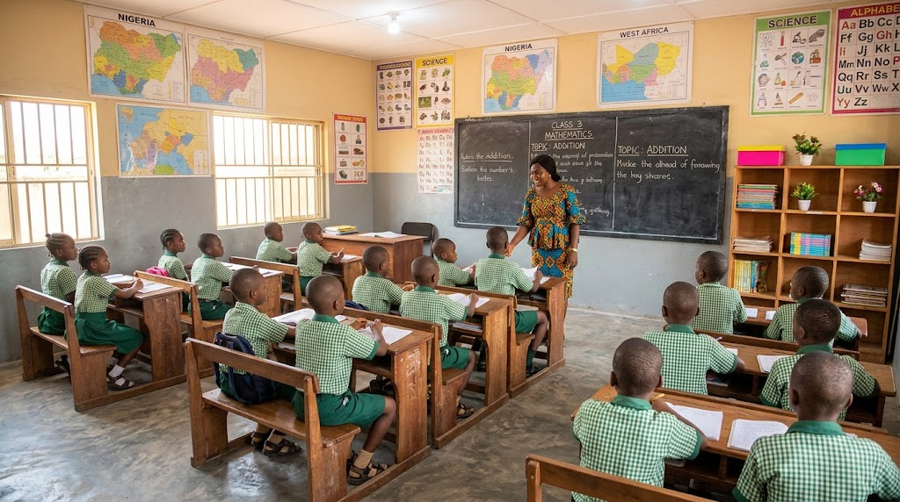
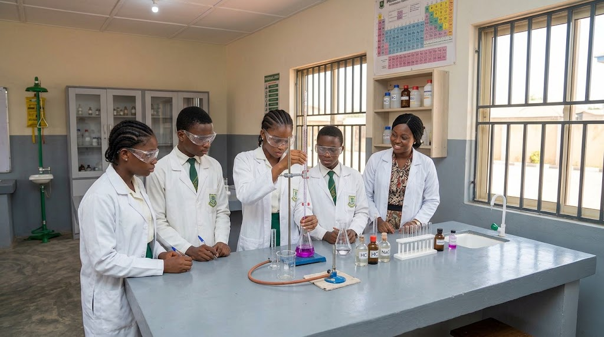
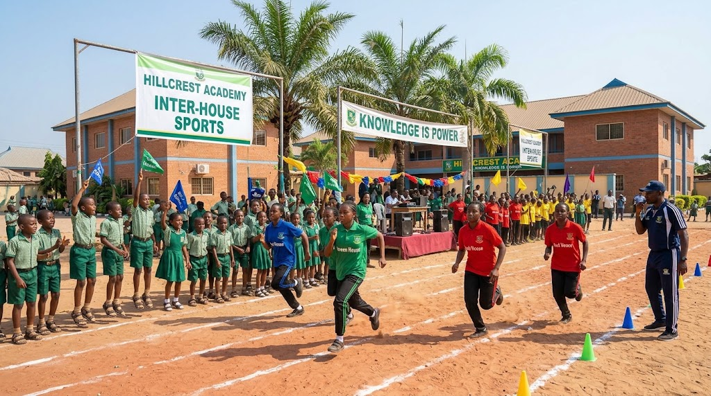
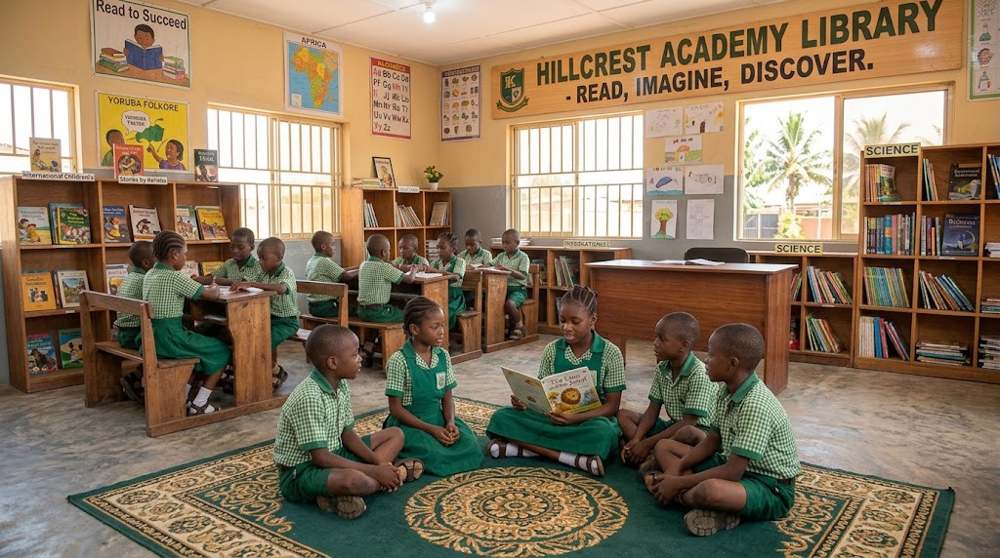

Where every child is known, challenged and cared for.
A warm, disciplined school with small classes, dedicated teachers and strong results in the Nigerian and British curricula.
images/hero-campus.jpg

Made easy for parents
Apply, pay, plan and message the school without the queue.
A place for every stage
From first day at nursery to graduation in SS3.
images/nursery.jpg

Nursery
Play-based learning, phonics and early numeracy in a safe, bright setting.
images/primary.jpg

Primary
Strong English and maths, plus science, ICT, music and French.
images/secondary.jpg

Secondary
JSS to SS3 with WAEC, NECO and IGCSE preparation and career guidance.
Why parents choose Hillcrest
Caring teachers
Qualified staff who treat every child as an individual.
Safe campus
Gated, supervised and CCTV-monitored throughout the day.
Good results
Consistent top grades in external examinations.
Character first
Respect, honesty and responsibility taught daily.
Life at Hillcrest
See more →images/classroom.jpg

images/science-lab.jpg

images/sports.jpg

images/library.jpg

What’s coming up
Full calendar →Tour the school and meet the teachers.
A day of races, relays and house pride.
Book a slot for your child’s assessment.